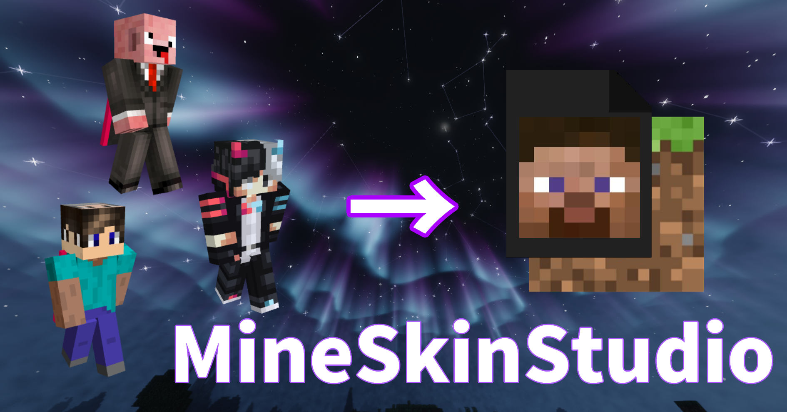

使い方
MineSkinStudioは、Minecraft統合版で使用できるスキンパックを簡単に作成できるツールです。
PCのマイクラ統合版で利用できます
以下の手順に従ってスキンパックを作成できます
- まず、スキン画像を選択してください。画像形式は.pngが望ましいです
- 次に読み込んだスキンに名前を入力してください
- 必要に応じてアニメーションや防具の表示/非表示を設定してください
- 必要に応じてマント画像を読み込んでください(マントは適切なものを選択してください)
- 全て終わったら「スキンパックを作成」ボタンをクリックすると、
SkinPack.zipが生成され、ダウンロードされます。 - ダウンロードされたSkinPack.zipを展開してpersonaに
そのまま入れてください(IObit Unlockerが必要) - IObit Unlockerの導入方法や使い方は各自で調べてください
- マイクラを起動してちゃんと導入出来てれば終わり
質問などはDiscordまで(スマホなどでの使用方法の質問は受け付けません)
注意
ローカルでは使えます
現在一度削除したスキン画像は読み込むことができません。
画像名を変えれば再び読み込むことができます(サイトの再読み込みでも可)
これは今後改善されるかもしれません
その他
exe版はDiscord鯖で配布してます(PCの人向けWindowsのみ)
YouTubeなどで本サイトの使用報告は不要ですが、リンクを貼っていただけると嬉しいです。
※使用した場合YURIRIにDMなので教えてくれると見に行きます()
協力(敬称略)
またその他制作に協力してくれた方ありがとうございますm(_ _)m
支援について
YouTubeのチャンネル登録&Discord鯖の参加をしてくれると嬉しいです
(下のYURIRIのサイトから飛べます)